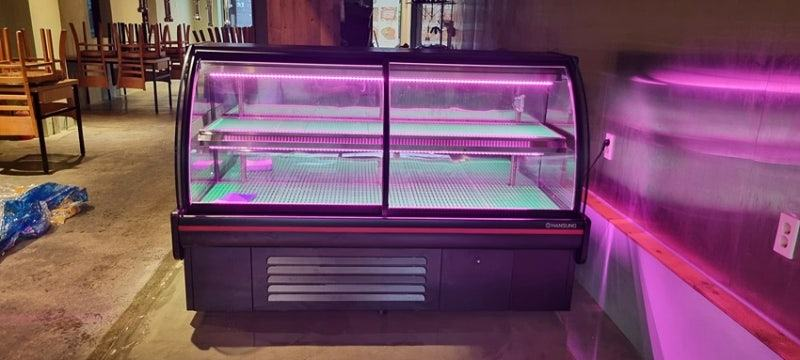
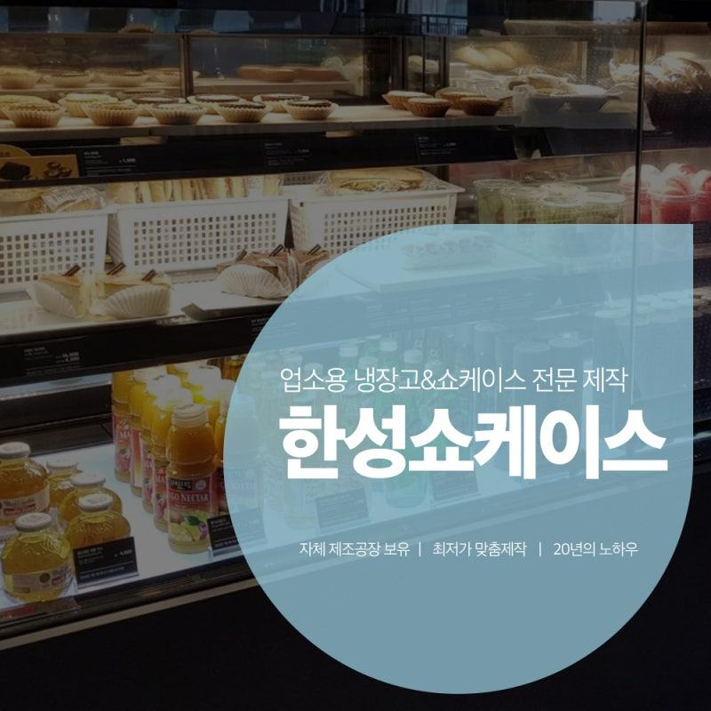
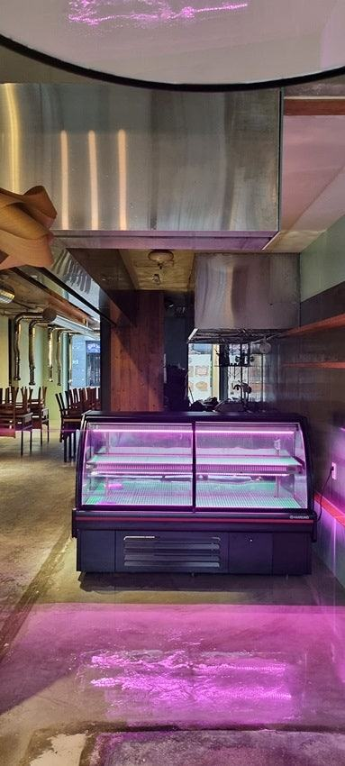
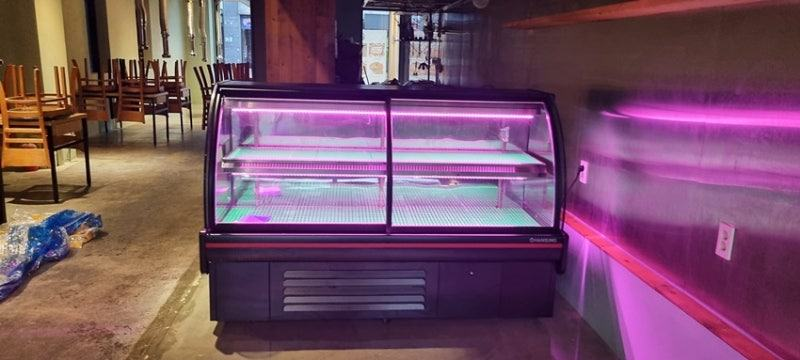
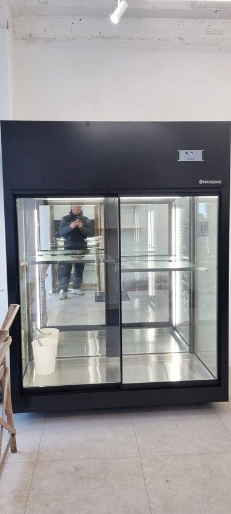

와인(음료)쇼케이스
업소용음료수냉장고 맞춤제작, 상담부터 설치까지 진행 순서

업소용음료수냉장고 맞춤제작은 어떤 음료를 얼마나 넣을지 정하고, 설치할 벽면을 실측한 뒤, 문 개수와 방식·선반 간격·외관과 조명을 결정해 제작하는 순서로 진행됩니다. 사장님이 미리 판매 음료 목록과 설치 자리 치수만 준비해 오셔도 상담이 훨씬 빨라집니다.
안녕하세요. 업소용 냉장고와 음료 쇼케이스를 매장 환경에 맞춰 주문 제작하는 한성쇼케이스입니다.
편의점형 매장, 식당의 주류 냉장고, 카페의 병 음료 진열대까지 음료수냉장고가 들어가는 곳은 다양합니다.
그런데 기성품은 폭과 높이, 문 개수가 정해져 있어서 벽면에 애매한 틈이 남거나 매장 분위기와 따로 노는 경우가 많죠.
맞춤제작이 처음이신 사장님들은 무엇부터 준비해야 하는지, 얼마나 걸리는지, 어디까지 바꿀 수 있는지 궁금해하십니다.
오늘은 업소용음료수냉장고를 주문 제작할 때 상담부터 설치까지 어떤 순서로 진행되는지, 단계마다 사장님이 준비하시면 좋은 것을 정리해 드리겠습니다.
1. 1단계: 무엇을 얼마나 넣을지 정하기
상담은 판매할 음료 목록에서 시작합니다. 캔 음료, 페트병, 유리병 맥주와 소주, 대용량 생수처럼 용기 높이가 다르면 선반 간격도 달라집니다.
가장 키 큰 용기와 가장 많이 파는 용기를 알려 주시면 칸 구성을 잡기 쉽습니다.
하루에 얼마나 팔리는지, 보충은 몇 번 하는지도 중요합니다. 회전이 빠른 매장은 칸마다 깊이를 넉넉하게 잡아 뒤에서 채우기 쉽게 하고, 종류가 많은 매장은 칸 수를 늘려 한눈에 보이게 구성합니다.
- 판매 음료 목록과 용기 높이를 적어 오세요.
- 하루 보충 횟수를 대략 알려 주세요.
2. 2단계: 설치 벽면 실측
다음은 냉장고가 들어갈 자리의 폭, 깊이, 천장 높이를 재는 단계입니다. 벽면 전체를 냉장고로 채울지, 일부만 쓸지에 따라 문 개수가 정해집니다.
기둥이나 창, 콘센트 위치도 함께 표시해 주세요.
반입 경로도 이때 확인합니다. 출입문 폭과 엘리베이터 크기보다 큰 제품은 들어가지 못하니, 긴 벽면이라면 여러 대로 나눠 제작해 나란히 붙이는 방식도 검토합니다.


3. 3단계: 문 방식과 외관, 조명 결정
손님이 직접 꺼내는 매장이라면 문 방식이 중요합니다. 여닫이문은 문을 활짝 열 수 있어 꺼내기 편하지만 앞쪽에 문이 열릴 공간이 필요하고, 미닫이문은 통로가 좁은 매장에서 유리합니다.
문이 스스로 닫히는 구조인지도 함께 정합니다.
외관은 프레임 색과 소재, 상단 간판 영역 유무를 고르고, 조명은 음료 라벨이 선명하게 보이는 색으로 정합니다.
인테리어 시안이 있다면 이 단계에서 보여 주시면 전체 톤을 맞추기 좋습니다.
- 통로 폭을 보고 여닫이·미닫이를 정하세요.
- 인테리어 시안을 상담 때 보여 주세요.
4. 4단계: 제작, 설치, 사용 안내
사양이 확정되면 공장에서 제작에 들어갑니다. 맞춤제작은 재고를 쌓아 두고 파는 방식이 아니라 주문마다 만드는 방식이라 기간이 필요하니, 오픈 일정에 여유를 두고 시작하시는 게 좋습니다.
설치 당일에는 수평을 맞추고 전원을 연결한 뒤 온도가 정상적으로 내려가는지 확인합니다. 사용 방법과 관리 요령도 이때 안내해 드리고, 이후 문제가 생기면 A/S로 이어서 관리합니다.
체크리스트
- 판매 음료 목록과 용기 높이
- 하루 판매량과 보충 횟수
- 설치 벽면 폭·깊이·높이
- 반입 경로 치수
- 문 방식과 자동 닫힘
- 프레임 색·간판·조명
현장에서 자주 보는 경우: 온라인 상담만으로는 믿기 어렵다며 공장을 찾는 사장님
맞춤제작은 매장마다 환경과 들어갈 규격이 다 달라서 재고를 쌓아 두고 파는 방식보다 손이 많이 갑니다.
주문이 들어올 때마다 부자재와 시간을 들여 만들어야 하죠. 그래서 처음 문의하시는 사장님 중에는 온라인 설명만으로는 믿음이 안 간다며 직접 확인하고 싶어 하시는 분들이 있습니다.
이럴 때는 전화 상담 후 직영 공장에 방문해 보시길 권해 드립니다. 도심 외곽이라 오가기 조금 불편할 수 있지만, 실제 제작 과정과 제품을 눈으로 보시면 결정이 훨씬 쉬워집니다.
전자제품인 만큼 A/S를 중요하게 보시는 것도 당연하니, 방문 때 사후 관리 방식까지 함께 확인해 보세요.




자주 묻는 질문
음료수냉장고 한 대만 주문해도 맞춤제작이 되나요?
한 대라도 매장 크기와 판매 음료에 맞춰 상담 후 제작합니다. 판매 음료 목록과 설치 자리 치수를 먼저 알려 주시면 됩니다.
기존 매장의 음료 냉장고 자리에 그대로 교체할 수 있나요?
기존 제품의 치수와 전기 위치를 기준으로 맞춰 제작할 수 있습니다. 철거와 설치 순서를 미리 정해 영업 공백을 줄이는 것이 좋습니다.
공장 방문 상담은 어떻게 예약하나요?
대표전화 031-986-2458로 방문 일정을 잡아 주세요. 방문 전에 판매 음료와 매장 사진을 준비해 오시면 상담이 빨라집니다.
매장 조건에 맞춰 만드는 한성쇼케이스
원하시는 제품 사진과 설치할 공간 사진만 보내 주셔도 매장에 맞는 구성을 추천해 드립니다.
- 전국 240여 개 A/S 전담 센터 운영
- 본사 대량 자재 매입으로 품질 대비 합리적인 가격
- 유럽제·삼성 냉각 콤프레셔 적용
- 국내 최초 쇼케이스 전문 디자이너 상주
매장 폭과 원하는 진열 구성을 알려 주세요. 실측과 견적을 안내해 드립니다.
031-986-2458